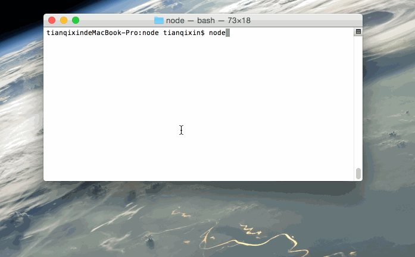

Node.js REPL(Read Eval Print Loop:交互式解释器) 表示一个电脑的环境，类似 Window 系统的终端或 Unix/Linux shell，我们可以在终端中输入命令，并接收系统的响应。
Node 自带了交互式解释器，可以执行以下任务：
读取 - 读取用户输入，解析输入了Javascript 数据结构并存储在内存中。
执行 - 执行输入的数据结构
打印 - 输出结果
循环 - 循环操作以上步骤直到用户两次按下 ctrl-c 按钮退出。
Node 的交互式解释器可以很好的调试 Javascript 代码。
开始学习 REPL
我们可以输入以下命令来启动 Node 的终端：
$ node >
这时我们就可以在 > 后输入简单的表达式，并按下回车键来计算结果。
接下来让我们在 Node.js REPL 的命令行窗口中执行简单的数学运算：
$ node > 1 +4 5 > 5 / 2 2.5 > 3 * 6 18 > 4 - 1 3 > 1 + ( 2 * 3 ) - 4 3 >
你可以将数据存储在变量中，并在你需要的使用它。
变量声明需要使用 var 关键字，如果没有使用 var 关键字变量会直接打印出来。
使用 var 关键字的变量可以使用 console.log() 来输出变量。
$ node
> x = 10
10
> var y = 10
undefined
> x + y
20
> console.log("Hello World")
Hello Workd
undefined
> console.log("www.shouce.ren")
www.shouce.ren
undefined
Node REPL 支持输入多行表达式，这就有点类似 JavaScript。接下来让我们来执行一个 do-while 循环：
$ node
> var x = 0
undefined
> do {
... x++;
... console.log("x: " + x);
... } while ( x < 5 );
x: 1
x: 2
x: 3
x: 4
x: 5
undefined
>
... 三个点的符号是系统自动生成的，你回车换行后即可。Node 会自动检测是否为连续的表达式。
你可以使用下划线(_)获取表达式的运算结果：
$ node > var x = 10 undefined > var y = 20 undefined > x + y 30 > var sum = _ undefined > console.log(sum) 30 undefined >
ctrl + c - 退出当前终端。
ctrl + c 按下两次 - 退出 Node REPL。
ctrl + d - 退出 Node REPL.
向上/向下 键 - 查看输入的历史命令
tab 键 - 列出当前命令
.help - 列出使用命令
.break - 退出多行表达式
.clear - 退出多行表达式
.save filename - 保存当前的 Node REPL 会话到指定文件
.load filename - 载入当前 Node REPL 会话的文件内容。
前面我们已经提到按下两次 ctrl + c 建就能退出 REPL:
$ node > (^C again to quit) >
接下来我们通过 Gif 图为大家演示实例操作：
